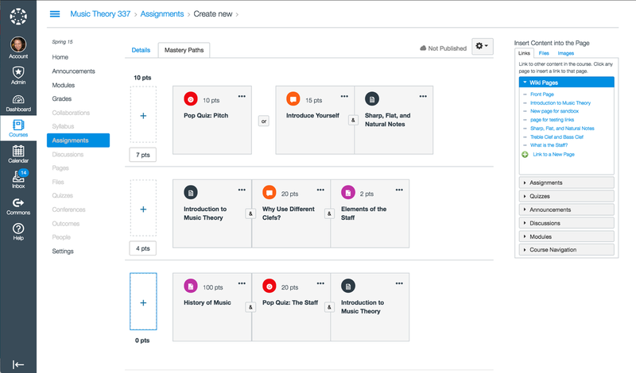

Canvas - What is it?
Canvas is a cloud-based learning management system (LMS). Learning management systems are software applications typically used in a corporate or educational market. In the case of Canvas, it is a streamlined method of administering online courses, making education easier to access by students, whether it’s for learning purposes or for feedback on their efforts. For educators and teachers, Canvas allows for a simpler and more effective way of managing the course for their students.
An example of what the interface looks like from an Educator's perspective
Features
- Discussion boards for asynchronous communication
- Chat rooms where students and teachers can communicate live
- Ability to share key updates or results on the fly
- Implementation of Quizzes
- Recording and uploading of audio and/or video
- Analytics and efficient data gathering
- Myriad tools for educators to customize course content